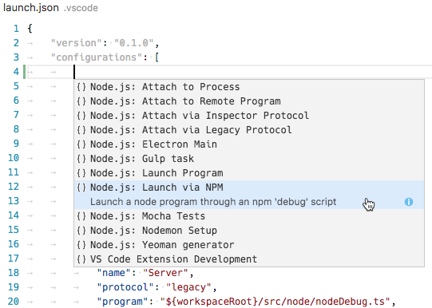
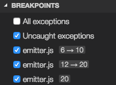
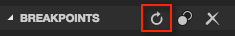
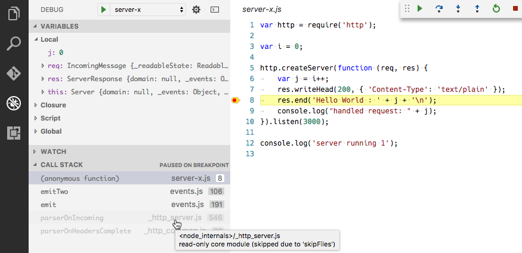

Node.js Debugging in VS Code
Visual Studio Code has built-in debugging support for the Node.js runtime and can debug JavaScript, TypeScript, and any other language that gets transpiled to JavaScript.
Are you new to VS Code? Learn more and download a faster Node.js editor here.
This document explains the details of Node.js debugging. The general debugging feature are described in Debugging.
Supported Node-like Runtimes
Since the VS Code Node.js debugger communicates to the Node.js runtimes through wire protocols, the set of supported runtimes is determined by all runtimes supporting the wire protocols.
Today two wire protocols exist:
- legacy: the original V8 Debugger Protocol which is currently supported by all runtimes but will most likely be dropped in Node.js v8.x.
- inspector: the new V8 Inspector Protocol is exposed via the
--inspectflag in Node.js versions >= 6.3. It addresses most of the limitations and scalability issues of the legacy protocol.
Currently these protocols are supported by specific version ranges of the following runtimes:
| Runtime | ‘Legacy Protocol’ | ‘Inspector Protocol’ |
|---|---|---|
| io.js | all | no |
| node.js | < 8.x | >= 6.3 (Windows: >= 6.9) |
| Electron | all | not yet |
| Chakra | all | not yet |
Although it appears to be possible that the VS Code Node.js debugger picks the best protocol always automatically,
we’ve decided for a ‘pessimistic approach’ with an explicit launch configuration attribute protocol and the following values:
auto: tries to automatically detect the protocol used by the targeted runtime. For configurations of request typelaunchand if noruntimeExecutableis specified, we try to determine the version by running node from the PATH with an--versionargument. If the version is >= 8.0 the new ‘inspector’ protocol is used. For configurations of request type ‘attach’ we try to connect with the new protocol and if this works, we use the ‘inspector’ protocol. We only switch to the new ‘inspector’ protocol for versions >= 6.9 because of severe problems in earlier versions.inspector: forces the node debugger to use the ‘inspector’ protocol based implementation. This is supported by node versions >= 6.3, but not (yet) by Electron.legacy: forces the node debugger to use the ‘legacy’ protocol based implementation. This is supported by node versions < v8.0) and Electron.
Starting with VS Code 1.11 the default value for the protocol attribute is auto.
If your runtime supports both protocols, here are a few additional reasons for using the inspector protocol over legacy:
- It can be more stable when debugging very large JavaScript objects. The legacy protocol can become painfully slow when sending large values between the client and server.
- If you are using an ES6 Proxy in your app, you can prevent a Node v7+ runtime from crashing when being debugged via the
inspectorprotocol. This issue is tracked in Microsoft/vscode#12749. - Debugging via the
inspectorprotocol can handle some trickier source map setups. If you have trouble setting breakpoints in source mapped files, try usinginspector.
We try to keep feature parity between both protocol implementations but this becomes more and more difficult because the technology underlying legacy is deprecated whereas the new inspector evolves quickly. For this reason, we specify the supported protocols if a features is not supported by both legacy and inspector.
Launch configuration attributes
The following attributes are supported in launch configurations of type launch and attach:
protocol- debug protocol to use. See section ‘Supported Node-like Runtimes’ above.port- debug port to use. See sections ‘Attaching to Node.js’ and ‘Remote Debugging Node.js’.address- TCP/IP address of the debug port. See sections ‘Attaching to Node.js’ and ‘Remote Debugging Node.js’.restart- restart session on termination. See section ‘Restarting debug sessions automatically’.timeout- when restarting a session, give up after this number of milliseconds. See section ‘Attaching to Node.js’.stopOnEntry- break immediately when the program launches.localRoot- VS Code’s root directory. See sections ‘Remote Debugging Node.js’ below.remoteRoot- Node’s root directory. See sections ‘Remote Debugging Node.js’ below.sourceMaps- enable source maps by setting this totrue. See section ‘Source Maps’.outFiles- array of glob patterns to look for in JavaScript files. See section ‘Source Maps’.smartStep- try to automatically step over code that doesn’t map to source files. See section ‘Smart Stepping’.skipFiles- automatically skip files covered by these glob patterns. See section ‘Skipping Uninteresting Code’.trace- enable diagnostic output. Set to"all"for verbose output.
These attributes are only available for launch configurations of request type launch:
program- an absolute path to the Node.js program to debug.args- arguments passed to the program to debug. This attribute is of type array and expects individual arguments as array elements.cwd- launch the program to debug in this directory.runtimeExecutable- absolute path to the runtime executable to be used. Default isnode. See section ‘Launch configuration support for ‘npm’ and other tools’.runtimeArgs- optional arguments passed to the runtime executable.env- optional environment variables. This attribute expects environment variables as a list of string typed key/value pairs.envFile- optional path to a file containing environment variable definitions.console- kind of console to launch the program, e.g.internalConsole,integratedTerminal,externalTerminal. See section ‘Node Console’ below.
This attribute is only available for launch configurations of request type attach:
processId- debugger tries to attach to this process after having sent a USR1 signal. With this setting, the debugger can attach to an already running process that was not started in debug mode.
Launch configuration snippets for common scenarios
You can use IntelliSense to add launch configuration snippets for commonly used Node.js debugging scenarios to the launch.json.

Here is the list of all snippets:
- Launch Program: Launch a node.js program in debug mode. The snippet asks you to enter the name of the program file.
- Launch via NPM: Launch a node program through an npm ‘debug’ script. If you have defined an npm debug script in your package.json, you can use this directly from your launch configuration. Make sure that the debug port used in the npm script, corresponds to the port specified in the snippet.
- Attach to Port: Attach to the debug port of a running Node.js program. Make sure that the Node.js program to debug has been started in debug mode and the debug port used is the same as the one specified in the snippet.
- Attach to Process: Open the process picker to select a node or gulp process for debugging. With this launch configuration you can even attach to a node or gulp process that was not started in debug mode.
- Nodemon Setup: Use nodemon to relaunch a debug session automatically whenever the JavaScript source has changed. Make sure that you have nodemon installed globally. Please note that terminating the debug session only terminates the program to debug, not nodemon itself. To terminate nodemon, press Control-C in the integrated terminal.
- Mocha Tests: Debug mocha tests in a
testfolder of your project. Make sure that your project has ‘mocha’ installed in its node_modules folder. - Yeoman generator: Debug a yeoman generator. The snippet asks you to specify the name of the generator. Make sure that your project has ‘yo’ installed in its node_modules folder and that your generated project has been installed for debugging by running
npm linkin the project folder. - Gulp task: Debug a gulp task. The snippet asks you to specify the name of the gulp task. Make sure that your project has ‘gulp’ installed in its node_modules folder.
Node console
By default, Node.js debug sessions launch the target in the internal VS Code Debug Console. Since the Debug Console does not support programs that need to read input from the console, you can enable either an external terminal or use the VS Code Integrated Terminal by setting the console attribute in your launch configuration to externalTerminal or integratedTerminal respectively. The default is internalConsole.
If an external terminal is used, you can configure which terminal program to use via the terminal.external.windowsExec, terminal.external.osxExec, and terminal.external.linuxExec settings.
Launch configuration support for ‘npm’ and other tools
Instead of launching the Node.js program directly with node, you can use ‘npm’ scripts or other task runner tools directly from a launch configuration:
- Any program available on the PATH (for example ‘npm’, ‘mocha’, ‘gulp’, etc.) can be used for the
runtimeExecutableattribute and arguments can be passed viaruntimeArgs. - You do not have to set the
programattribute if your npm script or other tool implicitly specifies the program to launch. - If you specify a debug port via the
portattribute, VS Code will not automatically add the--debug-brk=nnnnattribute because the debug port is typically specified by the npm script or other tool as well.
Let’s look at an ‘npm’ example. If your package.json has a ‘debug’ script, for example:
|
the corresponding launch configuration would look like this:
|
Note: On Windows, make sure to specify the executable with the correct extension, for example use
npm.cmdinstead of justnpmwhich exists but is the shell script for Linux and macOS.
Load environment variables from external file (node)
The VS Code Node debugger supports loading environment variables from a file and passing them to the Node.js runtime. To use this feature, add an attribute envFile to your launch configuration and specify the absolute path to the file containing the environment variables:
|
Any environment variable specified in the env dictionary will override variables loaded from the file.
Here is an example of an .env file:
|
Attaching to Node.js
If you want to attach the VS Code debugger to a Node.js program, launch Node.js as follows:
|
With the --debug-brk option, Node.js stops on the first line of the program.
The corresponding launch configuration looks like this:
|
If you want to attach to a Node.js process that hasn’t been started in debug mode, you can do this by specifying the process ID of the Node.js process as a string:
|
Since it is a bit laborious to repeatedly find the process ID and enter it in the launch configuration, node debug supports a command variable PickProcess that binds to a process picker that lets you conveniently pick the process from a list of node or gulp processes:

By using the PickProcess variable the launch configuration looks like this:
|
Remote debugging
The Node.js debugger supports remote debugging for versions of Node.js >= 4.x. Specify a remote host via the address attribute.
By default, VS Code will stream the debugged source from the remote Node.js folder to the local VS Code and show it in a read-only editor. You can step through this code, but cannot modify it. If you want VS Code to open the editable source from your workspace instead, you can setup a mapping between the remote and local locations. A localRoot and a remoteRoot attribute can be used to map paths between a local VS Code project and a (remote) Node.js folder. This works even locally on the same system or across different operating systems. Whenever a code path needs to be converted from the remote Node.js folder to a local VS Code path, the remoteRoot path is stripped off the path and replaced by localRoot. For the reverse conversion, the localRoot path is replaced by the remoteRoot.
Access Loaded Scripts
If you need to set a breakpoint in a script that is not part of your workspace and therefore cannot be easily located and opened through normal VS Code file browsing, you can access the loaded scripts of a JavaScript runtime by using the Debug: Open Loaded Script action (⌘F4 (Windows, Linux Ctrl+F4)). In the Quick Pick, you can filter and select the script to open. The script is then loaded into a read-only editor where you can set breakpoints. These breakpoints are remembered across debug sessions but you only have access to the script content while a debug session is running.

Restarting debug sessions automatically when source is edited
The restart attribute of a launch configuration controls whether the Node.js debugger automatically restarts after the debug session has ended. This feature is useful if you use nodemon to restart Node.js on file changes. Setting the launch configuration attribute restart to true makes the node debugger automatically try to re-attach to Node.js after Node.js has terminated.
If you have started your program server.js via nodemon on the command line like this:
|
you can attach the VS Code debugger to it with the following launch configuration:
|
Alternatively you can start your program server.js via nodemon directly with a launch config and attach the VS Code debugger:
|
Tip: Pressing the Stop button stops the debug session and disconnects from Node.js, but nodemon (and Node.js) will continue to run. To stop nodemon, you will have to kill it from the command line (which is easily possible if use the
integratedTerminalas shown above).Tip: In case of syntax errors, nodemon will not be able to start Node.js successfully until the error has been fixed. In this case, VS Code will continue trying to attach to Node.js but eventually give up (after 10 seconds). To avoid this, you can increase the timeout by adding a
timeoutattribute with a larger value (in milliseconds).
Restart frame (node)
The Node debugger supports restarting execution at a stack frame. This can be useful in situations where you have found a problem in your source code and you want to rerun a small portion of the code with modified input values. Stopping and then restarting the full debug session can be very time-consuming. The Restart Frame action allows you to re-enter the current function after you have changed variables with the Set Value action:

Note that Restart Frame won’t unroll any state changes, so it may not always work as expected.
Make sure to use a Node.js version >= 5.11 since earlier versions do not work in all situations.
Function breakpoints
The Node.js debugger supports function breakpoints but their usefulness is limited because:
- Function breakpoints only work for global, non-native functions.
- Function breakpoints can only be created if the function has been defined (and has been seen by the debugger).
Breakpoint hit counts
The ‘hit count condition’ controls how many times a breakpoint needs to be hit before it will ‘break’ execution. The hit count syntax supported by the Node.js debugger is either an integer or one of the operators <, <=, ==, >, >=, % followed by an integer.
Some examples:
>10break always after 10 hits<3break on the first two hits only10same as>=10%2break on every other hit
Breakpoint validation
For performance reasons, Node.js parses the functions inside JavaScript files lazily on first access. As a consequence, breakpoints don’t work in source code areas that haven’t been seen (parsed) by Node.js.
Since this behavior is not ideal for debugging, VS Code passes the --nolazy option to Node.js automatically. This prevents the delayed parsing and ensures that breakpoints can be validated before running the code (so they no longer “jump”).
Since the --nolazy option might increase the start-up time of the debug target significantly, you can easily opt out by passing a --lazy as a runtimeArgs attribute.
When doing so you will find that some of your breakpoints don’t “stick” to the line requested but instead “jump” for the next possible line in already-parsed code. To avoid confusion, VS Code always shows breakpoints at the location where Node.js thinks the breakpoint is. In the BREAKPOINTS section, these breakpoints are shown with an arrow between requested and actual line number:

This breakpoint validation occurs when a session starts and the breakpoints are registered with Node.js, or when a session is already running and a new breakpoint is set. In this case, the breakpoint may “jump” to a different location. After Node.js has parsed all the code (e.g. by running through it), breakpoints can be easily re-applied to the requested locations with the Reapply button in the BREAKPOINTS section header. This should make the breakpoints “jump back” to the requested location.

Skipping uninteresting code (node, chrome)
VS Code Node.js debugging has a feature to avoid code that you don’t want to step through (AKA ‘Just My Code’). This feature can be enabled with the skipFiles attribute in your launch configuration. skipFiles is an array of glob patterns for script paths to skip.
For example using:
|
all code in the node_modules and lib folders in your project will be skipped.
Built-in core modules of Node.js can be referred to by the ‘magic name’ <node_internals> in a glob pattern. The following example skips all internal modules:
|
The exact ‘skipping’ rules are as follows:
- If you step into a skipped file, you won’t stop there - you will stop on the next executed line that is not in a skipped file.
- If you have set the option to break on thrown exceptions, then you won’t break on exceptions thrown from skipped files.
- If you set a breakpoint in a skipped file, you will stop at that breakpoint, and you will be able to step through it until you step out of it, at which point normal skipping behavior will resume.
Skipped source is shown in a ‘dimmed’ style in the CALL STACK view:

Hovering over the dimmed entries explains why the stack frame is dimmed.
A context menu item on the call stack, Toggle skipping this file enables you to easily skip a file at runtime without adding it to your launch config. This option only persists for the current debugging session. You can also use it to stop skipping a file that is skipped by the skipFiles option in your launch config.
Note: The
legacyprotocol debugger supports negative glob patterns, but they must follow a positive pattern: positive patterns add to the set of skipped files, while negative patterns subtract from that set.
In the following (legacy protocol-only) example all but a ‘math’ module is skipped:
|
Note: The
legacyprotocol debugger has to emulate theskipFilesfeature because the V8 Debugger Protocol does not support it natively. This might result in slow stepping performance.
Source maps
The Node.js debugger of VS Code supports JavaScript Source Maps which help debugging of transpiled languages, e.g. TypeScript or minified/uglified JavaScript. With source maps, it is possible to single step through or set breakpoints in the original source. If no source map exists for the original source or if the source map is broken and cannot successfully map between the source and the generated JavaScript, then breakpoints show up as unverified (gray hollow circles).
Source maps can be generated with two kinds of inlining:
- Inlined source maps: the generated JavaScript file contains the source map as a data URI at the end (instead of referencing the source map through a file URI).
- Inlined source: the source map contains the original source (instead of referencing the source through a path).
VS Code supports both the inlined source maps and the inlined source.
The source map feature is controlled by the sourceMaps attribute which defaults to true starting with VS Code 1.9.0. This means that node debugging always tries to use source maps (if it can find any) and as a consequence you can even specify a source file (e.g. app.ts) with the program attribute.
If you need to disable source maps for some reason, you can set the sourceMaps attribute to false.
If the generated (transpiled) JavaScript files do not live next to their source but in a separate directory, you must help the VS Code debugger locating them by setting the outFiles attribute. This attribute takes multiple glob patterns for including and excluding files from the set of generated JavaScript files. Whenever you set a breakpoint in the original source, VS Code tries to find the generated JavaScript code in the files specified by outFiles.
Since source maps are not automatically created, you must configure the transpiler you are using to create them. For TypeScript this can be done in the follwoing way:
|
This is the corresponding launch configuration for a TypeScript program:
|
Smart stepping
With the smartStep attribute set to true in a launch configuration, VS Code will automatically skip ‘uninteresting code’ when stepping through code in the debugger. ‘Uninteresting code’ is code that is generated by a transpiling process but is not covered by a source map so it does not map back to the original source. This code gets in your way when stepping through source code in the debugger because it makes the debugger switch between the original source code and generated code that you are not really interested in. smartStep will automatically step through code not covered by a source map until it reaches a location that is covered by a source map again.
This is especially useful for cases like async/await downcompilation in TypeScript, where the compiler injects helper code that is not covered by a source map.
JavaScript source map tips
A common issue when debugging with source maps is that you’ll set a breakpoint, and it will turn gray. If you hover the cursor over it, you’ll see the message, "Breakpoint ignored because generated code not found (source map problem?)". What now? There are a range of issues that can lead to this. First, a quick explanation of how the Node debug adapter handles source maps.
When you set a breakpoint in app.ts, the debug adapter has to figure out the path to app.js, the transpiled version of your TypeScript file, which is what is actually running in Node. But, there is not a straightforward way to figure this out starting from the .ts file. Instead, the debug adapter uses the outFiles attribute in the launch.json to find all the transpiled .js files, and parses them for a source map, which contains the locations of its associated .ts files.
When you build your app.ts file in TypeScript with source maps enabled, it either produces an app.js.map file, or a source map inlined as a base64-encoded string in a comment at the bottom of the app.js file. To find the .ts files associated with this map, the debug adapter looks at two properties in the source map, sources, and sourceRoot. sourceRoot is optional - if present, it is prepended to each path in sources, which is an array of paths. The result is an array of absolute or relative paths to .ts files. Relative paths are resolved relative to the source map.
Finally, the debug adapter searches for the full path of app.ts in this resulting list of .ts files. If there’s a match, it has found the source map file to use when mapping app.ts to app.js. If there is no match, then it can’t bind the breakpoint, and it will turn gray.
Here are some things to try when your breakpoints turn gray:
- Do you have
"sourceMaps": falsein yourlaunch.json? - Did you build with source maps enabled? Are there
.js.mapfiles, or inlined source maps in your.jsfiles? - Did you set the
outFilesproperty in yourlaunch.json? It should be a glob pattern for an absolute path that matches your.jsfiles. - Try the ‘inspector’ protocol implementation. It can handle some more of the more complex source map cases.
- Are the
sourceRootandsourcesproperties in your source map correct? Can they be combined to get the correct path to the.tsfile? - Are you using Webpack? By default, it outputs paths with a
webpack:///prefix, which the debug adapter can’t resolve. You can change this in your Webpack configuration with thedevtoolModuleFilenameTemplateoption, or try using the ‘inspector’ protocol, which provides some extra options for resolving these paths. - Have you opened the folder in VS Code with the incorrect case? It’s possible to open folder
foo/from the command line likecode FOOin which case source maps may not be resolved correctly. - Try searching for help with your particular setup on Stack Overflow or by filing an issue on GitHub.
- Try adding a
debuggerstatement. If it breaks into the.tsfile there, but breakpoints at that spot don’t bind, that is useful information to include with a GitHub issue.
Next Steps
In case you didn’t already read the Node.js section, take a look at:
- Node.js - End to end Node scenario with a sample application
To see a tutorial on the basics of Node.js debugging, check out:
- Intro Video - Debugging - Introductory video showcasing the basics of debugging.
To learn about VS Code’s task running support, go to:
- Tasks - Running tasks with Gulp, Grunt and Jake. Showing Errors and Warnings
To write your own debugger extension, visit:
- Debuggers - Steps to create a VS Code debug extension starting from a mock sample
Common Questions
Q: What Node.js version is required for Node.js debugging?
A: The latest LTS version of Node.js is recommended.
Q: Can I use nvm (Node Version Manager) with VS Code?
A: Yes. If you are managing Node.js versions with nvm, make sure to restart VS Code after you have set a Node.js version with nvm use ... because VS Code will not pick up changes to environment variables (for example PATH) that occur after it was launched.